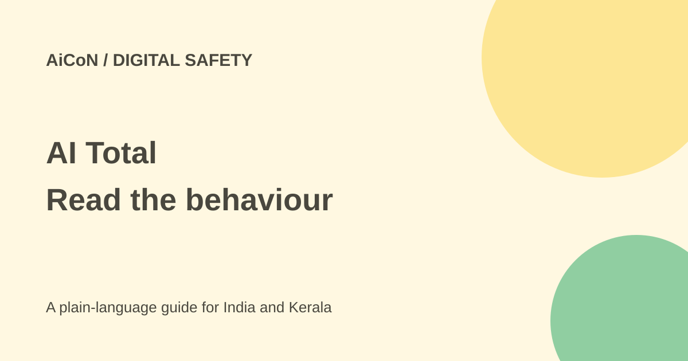

AI Total: inspect an agent skill before installing
AI Total is Zenity Labs' service for inspecting AI agent skills. It runs a skill in an isolated test environment and records what it does. A test result is useful evidence, not a guarantee that a skill is safe.

What is an agent skill?
A skill is an add-on instruction package for an AI tool. It can tell the tool to read files, call websites, install packages or run commands. A harmless title does not prove that the actions inside it are harmless.
Static review reads the package without running it. AI Total adds a runtime check: a live agent activates the skill in a sandbox. Zenity says the sandbox includes planted credentials and sensitive-looking files to reveal attempts to collect secrets.
What the service records
The maker describes records of domains contacted, packages fetched, files touched, commands and tool calls. The portal lists verdicts such as Malicious, Suspicious and No Data. Read the evidence behind the verdict instead of treating a colour or label as the whole answer.
Zenity's launch findings are its own research. Large install counts and a popular registry position do not establish safety. We did not independently reproduce the company's malware findings or detonate a skill for this article.
How to check a package cautiously
- Find the exact package, version, source and author. Similar names can point to different code.
- Read its instructions, dependencies, network destinations and install steps before use.
- Open AI Total and look for an existing result for the exact version.
- Inspect the recorded domains, files and commands. Ask whether they match the task the package claims to do.
- If a new submission is needed, check current access. The portal says submissions are invite-only.
- Do not upload company files, private keys or real passwords to demonstrate a problem. Use a clean test copy with fake data.
- Combine the result with source review and a tightly limited local sandbox before permitting access to real accounts.
Free or paid?
The current portal says browsing is free and detonation is invite-only. The launch describes a free service, but that is not proof that every visitor can submit a new package today. No India-specific paid price was confirmed.
The fetched public library showed no available results during this review. That may be a loading or availability issue; it does not prove that the service has never analysed a package. We did not sign in or receive an invite.
Why one clean run is not enough
A package can behave differently with another prompt, version, date or remote resource. A No Data verdict is not a safety certificate. Keep sensitive accounts disconnected during testing and review updates again.
What changed since the original post?
The current portal still distinguishes free browsing from invite-gated submission. We added the visible library limitation and separated Zenity's research claims from independently checked results. No package was uploaded or installed.
Frequently asked questions
Can anyone submit now?
The checked portal says new submissions need an invitation.
Does a clean result prove safety?
No. It covers observed behaviour in a particular test.
Can I trust popularity?
Popularity is not evidence that permissions or code are safe.
Sources: AI Total portal · Zenity explanation. Checked 7 October 2026.